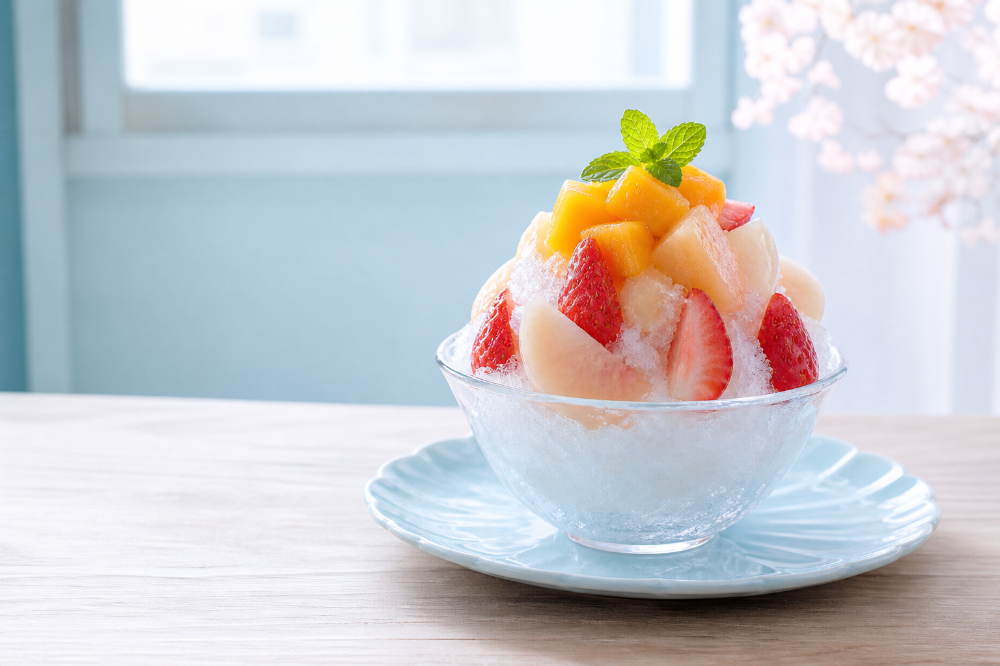

営業日を確認
不定期営業や予約優先の店は、当日の公式投稿までチェック。
FUKUOKA & NEARBY · SUMMER 2026
福岡市内・糸島・北九州・佐賀まで、
わざわざ行きたい人気店を厳選。

ABOUT THIS GUIDE
福岡市内を中心に、糸島、北九州、福岡県南部、佐賀まで。味や素材はもちろん、お店の雰囲気やドライブして行く楽しさも含めて、友人におすすめしたくなる店を選びました。
お出かけ前に
季節限定・不定休・予約制・数量限定の店があります。必ず公式サイトや公式Instagramで最新の営業情報をご確認ください。
EDITOR'S PICKS
迷ったらここから。個性、素材、旅の楽しさで選んだ本命リストです。
FIND YOUR FAVORITE
12店を表示中
検索語や地域フィルターを変えてみてください。
GOOD TO KNOW
不定期営業や予約優先の店は、当日の公式投稿までチェック。
行列に備えて、飲み物や日傘を。売り切れ前の早めの来店がおすすめ。
糸島、柳川、門司港、神埼、呼子は周辺観光と組み合わせると一日旅に。